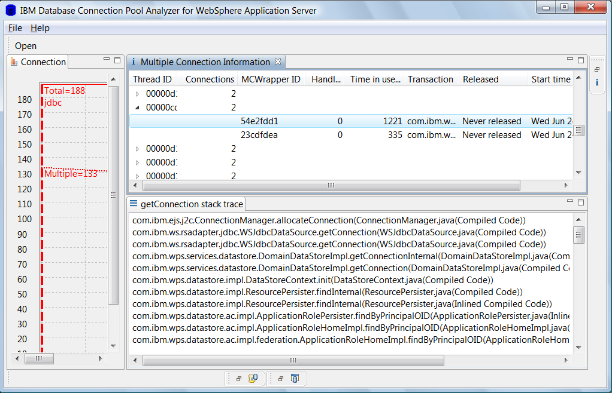

Multiple Connection Information View
Multiple Connection Information View is located on the right part of the tool.
Multiple Connection Information View displays the number of multiple JDBC connections per thread sorted by time in use(milliseconds)
thread ID, Number of multiple JDBC connections per thread, MCWrapper ID,Handle count,transaction,time in use and release time are displayed
By clicking on any MCWrapper ID, getConnection Java stack trace can be shown in getConnection stack trace view
